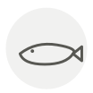

Merlu
Hake
| Nom latin | Merluccius merluccius |
|---|---|
| Famille | Poissons & fruits de mer |
| Origine | Atlantique Nord-Est |
| Saison | mars – août |
| Goût | Délicat · Doux · Iodé · Sucré |
| Prix courant | 12–20 €/kg |
Ce que c’est
L’Espagne en mange plus que quiconque et tient la gorge — la kokotxa — pour la meilleure part, un morceau gélatineux dont les cuisiniers basques tirent la sauce pil-pil rien qu’en la faisant tourner dans l’huile tiède jusqu’à émulsion.
En cuisine
Sa chair est fragile et se défait si on la retourne deux fois. Cuisez-la d’un seul côté et finissez au gril.
S’accorde avec
Ail Huile d’olive Persil Palourde Piment Pomme de terre Citron Vinaigre de vin blanc
Même espèce
De saison en même temps
Églefin Saint-Pierre Carrelet Lieu noir Crabe des neiges Truite
Une erreur ici, ou un oubli ? Dites-le nous